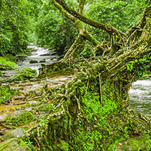

Meghalaya & Assam Nature & Wildlife Adventure (8D/7N)
- 
Dates:20th January - 27th January 2018 | 3rd February - 10th February 2018
Cost: 4 PAX - INR 40,000 per person | 8 PAX INR 35,000 per person
India Untravelled takes you on a short trip to the Khasi hills of Meghalaya which includes a rural stay at Mawlynnong village (India's cleanest village) as well at trekking in Nongriat near Cherrapunjee to see the Double Decker Root bridge and other natural marvels. For the Wildlife enthusiasts one also gets to experience wildlife at The Kaziranga National Park in Assam.
The Three Sisters: Meghalaya, Assam & Nagaland
-
29 Oct - 6 Nov
5 Nov - 13 Nov (9 Days/8 Nights)
Cost: INR 38,000- 43,000 per person (depending on group size)This trip includes bespoke experiences in the Khasi hills of Meghalaya and cultural immersion with the Angami tribe of Nagaland. It also offers opportunities for hiking in the serene Dzukou valley along with wildlife sighting in Kaziranga National Park in Assam. The journey begins at Guwahati with a visit to Shillong, the capital of Meghalaya to experience the pristine attractions of the Khasi hills and also to learn about the indigenous tribes at Don Bosco cultural museum. In Mawlynnong village, one can experience the hospitality of Khasi tribe and also observe their way of living alongside nature. Then travel through the plains of Assam with a halt in Kaziranga for wildlife encounters in the grasslands of the National Park in jeep safari or elephant ride. Finally in Nagaland, explore the beautiful Dzukou valley on a trek through a picturesque trail.
Our fixed trips to Spiti and Ladakh this season:
Trips to Spiti
-
Kinnaur and Spiti Safari
8 Sept - 16 Sept (with Chandrataal)
26 May - 3 June | 13 Oct - 21 Oct
Costs: INR 26,990 per person excluding 5% GSTThe Kinnaur and Spiti Safari starts in Shimla and takes you through the stunning and picturesque valleys of the Sutlej, Baspa, Spiti and Pin rivers, and up and over the majestic Rohtang and Kunzum passes. You travel into the spectacular valley of the Sutlej River in Kinnaur, the mighty Kinner Kailash keeps you company in Kalpa, and the enchanting Baspa valley is the perfect place to rejuvenate. While in Spiti, you journey through some of the worlds highest villages, visit ancient monasteries (including a monastery over 1000 years old), experience the Spitian way of life through traditional homestays, and get an insight into Spiti’s history, culture & folklore. This trip packs in as much of Spiti and Kinnaur as possible, without compromising your comfort levels.
-
Spiti Kaleidoscope
1 Jul - 7 Jul | 12 Aug - 18 Aug | 2 Sep - 8 Sep | 30 Sep - 6 Oct
Costs: INR 19,800 per person excluding 5% GSTThis adventure takes you up and over the majestic Rohtang and Kunzum passes, and through the graphic valleys of the Chandra, Spiti and Pin rivers. We’ll take in the sights on the left bank plateau as we acclimatize to the altitude, safari to the highest villages in the world, experience Spitian culture through traditional homestays and folk performances, ride a yak in the high Himalayas, hike through Snow Leopard & Himalayan Wolf habitats, discover fascinating remnants of the Himalayan heritage, mountain bike in some of the most stunning & rugged back country trails, get a glimpse into a well – preserved Buddhist heritage dating back to over 1000 years, savour local Spitian cuisine, get an insight into on-going development & conservation projects, and discover the magic of what we like to call “the Spiti experience”.
Trips to Ladakh
-
A Buddhist Pilgrimage
12-19 May 2018 | 02-09 June 2018 | 11 – 18 Aug 2018
Costs: INR 39,000 per personTake a deep dive into Ladakh's culture and heritage as we take a tour to the most ancient monasteries of Ladakh. Rinchen Zangpo (957 – 1055 AD), also called Mahaguru, was an 11th century ruler and scholar in western Tibet. During his era, he initiated 108 temples inviting artisans from Kashmir who brought with them their unique style of art and painting. Thus, came into existence the most celebrated, and undoubtedly the most beautiful monasteries of Ladakh; The Alchi monastery, Mangyu monastery and Sumda-Chun monastery. Take this pilgrimage tour and explore the rich history of Ladakh’s kingdom. Stay at our beautiful village homestays, powered by solar energy, and experience local life of two beautiful villages of Ladakh. Also visit the high altitude Pangong-Tso Lake.
-
The Copper Trail
19 – 27 May 2018 | 16-24 June 2018 | 04 – 12 Aug 2018
Trek: Medium (18-20 Km)
Cost: INR 37,500 per personArtisans of Ladakh are experts of making copper artifacts since hundreds of years. Sadly, this art is fading away and is now left limited to a few remote pockets in Ladakh. Through this tour we want to revive this dying art and also help in improving the livelihood of the villagers.
We will take you to the last remaining four Himalayan villages where this art is still practiced. Try this art with your own hands as the artisans teach you this skill. Take back a memorable souvenir for yourself.
Stay at our beautiful village homestays which are powered by solar energy, and experience what it's like to live closest to the real Himalayan culture. -
The Nomadic Life in Changthang
23-29 June 2018 | 18-24 Aug 2018M
Costs: INR 41000 per personAt an average altitude of 14,600 meters above sea level, the Changthang plateau is one of the least populated areas of the world. The vast is home to the Changpa nomads who live all year through in these harsh conditions. Near the lakes are grasslands which bloom in summers. The nomads migrate from their villages to these pastures with their livestock of Yaks, Sheep and Pashmina goats.
Mahé is one such nomadic village of Ladakh which offers an enriching experience of nomadic lifestyle. The village was solar electrified by our partner's initiative in Oct 2016 and it’s a unique village held mostly by women. These women majorly do labor work but they also know Carpet weaving which is common in Changthang. Off late the weaving is not being practiced a lot due to lack of market. The community face lot of other issues as well owing to climate change and cultural loss due to rampant urban migration.
Through homestay based tourism in Mahé we are engaging tourists to experience the nomadic culture, aiming alongside to improve the lives of this community. The region has breathtaking views, some unexplored lakes and endemic wildlife.
-
STORIES FROM PAST TRAVELLERS
See testimonials, stories, feedback and pictures from our travellers to Spiti over the past two years:Testimonials:
"I had a wonderful time at Ladakh.
I cannot imagine a more beautiful place than Urbis. The trek was through valley of flowers and the homestay there was with such a lovely, warm hearted family. They took good care of every little detail and treated me like family :) Hospitality at it's best!
Travel to Pangong Tso was an experience not describable in words. The homestay was right next to the lake which was good.
Last but not the least, enjoyed local food experience. I am definitely going there again. Thanks a lot for helping me plan this much needed break."~ Preeti Jain, travelled to Ladakh in July 2017
"It was a wonderful trip. Made lot of new friends. Guide and driver was excellent. Home stay was good too. Speechless about the beauty of the place.I can't think of anything that can improve except some more orientation on compost toilet would help. Or may be alternate toilet arrangements.
Thank you so much for such a wonderful trip. "~ Chandrashila, travelled solo on our Kinnaur and Spiti Safari in August 2016
"The holiday in Spiti was one of the best, as it was firstly offbeat and it also gave me a good insight on the lives of the locals. Responsible travel and carbon neutrality is what attracted me to this kind of a holiday. The arrangements were very well done and our guides and drivers ensured we were taken care of. It was great to meet Ishita at Kaza and understand the good work she and her team are doing in Spiti. Loved the hospitality and warmth of our hosts at our homestays / guest houses and the people of Spiti overall. My favourite memories are Tabo, Komic and Langza. We should have a homestay at Langza instead of Demul. Langza's beauty was just too much for words. Would like to travel like this to other places as well in the future :)
Thanks for all the arrangements and coordination. "~ Malita Crasto, travelled on Kinnaur and Spiti Safari trip in June 2015.
"I’m still relishing the memories of Spiti and the wonderful people I met on this trip. The Kinnaur & Spiti jeep safari had been the best of the journeys I have undertaken till yet. I never expected the trip, especially the hotels & homestays to be as good as they were. The rooms in all the hotels were very neat and clean, especially bathrooms, and all of them had amazing views. The best was in Kalpa and Dhankar. The homestays in Demul & Komic too were beautiful. It was wonderful to put up with the locals of some of the remotest villages in Asia and experience their routine life. Chhering (our guide ) was par excellence. He was genuinely concerned about everyone on the trip and looked after each one of us personally. Everyone enjoyed his company and all the stories he told us about Spiti and its people. Driving in this part of Asia is one of the toughest things to do but Gatuk (our driver) was simply superb at it. A highly recommended journey for anyone who wants to try something different."
~ Piyush Patni
"I absolutely loved the Spiti trip! I had wonderful experiences meeting new people, exploring quaint villages and discovering the wonders of this beautiful country. I really enjoyed the homestays and eating local Spiti food. I also liked the fact that it was a small group, if it had been much larger we would have had a harder time moving about and fitting in the jeep."
~Sami Steer
"Spiti is truly amazing, interacting with the people out there, made me realize that it is so easy for one to be happy! I would like to congratulate India Untravelled, for getting together such a wonderful mix of people. I thoroughly enjoyed interacting with each one of them, their curiosity about the world, was something that I shall take away with me. :) Our guide Tsering was also wonderful, his knowledge about the Buddhist monasteries was extremely helpful!"
~Adhitya Prakash
"I had never heard of "Spiti" till I came across a beautiful snap on your website and from that moment on, I had decided that I am going there! The location was amazing -- what blew me off is the onward and return journey (esp the return journey) -- it was so funny, I was sleepy but was keeping my eyes open so that I dont miss on a single amazing view! I especially loved the Kunzum pass :) The homestays were both really nice! It was the first of a kind experience for me and was a good experience -- we even learnt how to make Momos. The Post office experience was lovely! The thrill of posting from the highest post office, the lovely stamps, the hospitable postman – they even served us tea. The post cards haven’t reached though. Not yet. Overall -- I must say a lovely trip. The hotels selected, the locations, the guide. Looking forward to travelling with India Untravelled again :)"
~Mansee Shah
On the India Untravelled Blog
Sarita: Spiti, a Dustland Fairytale
Charu: Spiti: A World Within a World
Aditi: Tabo: An Alternative Guide
Mansee: Surreal Spiti
Divya: Spiti Valley: An Unforgettable Trip
See photos of Spiti on our Facebook page
Browse through our
Please email us at untravel@indiauntravelled.com to plan and book your travels.
Past Trips


Please email us at untravel@indiauntravelled.com to plan and book your travels.